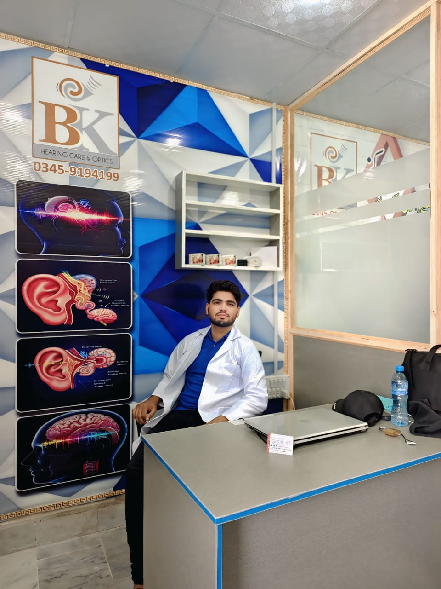

Helping you reconnect with the world through clear and confident hearing.
👩⚕️ AUDIOLOGIST
Certified Audiologist | Hearing & Balance Specialist

I’m Audiologist, a certified Audiologist with a B.S. in Audiology from Khyber Medical University Of Peshawar. I specialize in diagnosing and treating hearing and balance disorders. My approach combines the latest hearing technology with compassionate, patient-centered care.
Comprehensive diagnostic hearing assessments using advanced audiometric tools.
Personalized fitting and fine-tuning for comfort and clarity in every environment.
Evaluation and treatment for ringing or buzzing sounds in your ears.
Gentle, accurate screening for infants and school-aged children.
Here are some common questions patients often ask about hearing and audiology care.
An audiologist is a healthcare professional who specializes in diagnosing, managing, and treating hearing and balance disorders in people of all ages.
It’s recommended to get your hearing tested once a year, especially if you’re over 40 or notice any changes in your hearing ability.
Yes, we provide hearing aid fittings, adjustments, and repairs for a wide range of brands and models.
Yes, hearing issues can occur at any age. We offer safe and gentle hearing tests designed specifically for children.
No referral is needed. You can directly book your appointment for a full hearing evaluation.
Most hearing tests take about 30 to 45 minutes, depending on the type of evaluation required.
Schedule your appointment or ask a question below.
Address: Phase 4 Near HMC Rabbani Medical Complex Peshawar
Phone: 03888888888
Email:example231@gmail.com